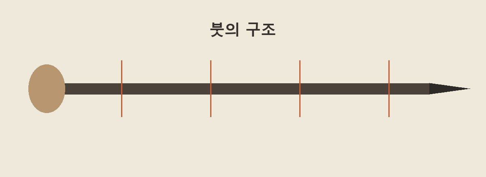
붓은 손에 쥐는 필관과 먹을 담는 붓촉으로 나뉩니다. 필관에는 가볍고 곧은 대나무가 널리 쓰입니다.
필관과 털을 잇는 자리를 치죽이라 하고, 실제로 먹을 담아 획을 만드는 털 묶음을 붓촉이라 합니다.
초가리라고도 하는 붓촉의 중심에는 심소가 놓입니다. 심소는 획이 되돌아오는 힘을 좌우하므로 탄성이 분명한 털을 고릅니다.
심소 바깥을 고르게 감싸 붓의 표면을 이루는 부분은 의체라 부릅니다.
종이와 직접 닿는 의체에는 부드러움과 탄성을 함께 갖춘, 끝이 살아 있는 털을 사용합니다.
털끝이 자연스럽게 가늘어진 부분을 호라 부릅니다. 잘리거나 닳지 않은 끝을 골라야 먹선이 갈라지지 않으므로, 서예용 재료는 한 올씩 상태를 확인합니다.
작업대에는 털을 고르고 빗고 자르고 묶기 위한 도구가 차례대로 놓입니다.
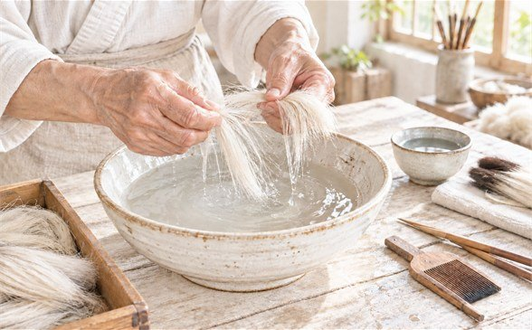
털의 방향과 길이를 맞춘 다음, 뒤집히거나 상한 털을 도구로 하나씩 골라냅니다. 이 선별을 반복해야 붓끝이 고르게 모입니다.
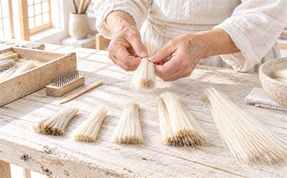
치게는 촘촘한 금속 이가 달린 빗입니다. 짧은 속털을 털어 내고 엉킨 결을 같은 방향으로 풀어 주는 데 씁니다.
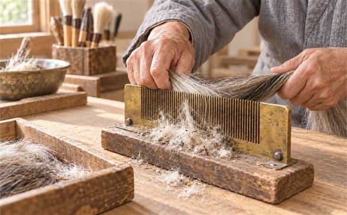
곱게 거른 왕겨 재는 털 표면의 기름을 흡수하는 재료입니다. 필요한 만큼만 얇게 뿌려 탈지 정도를 맞춥니다.
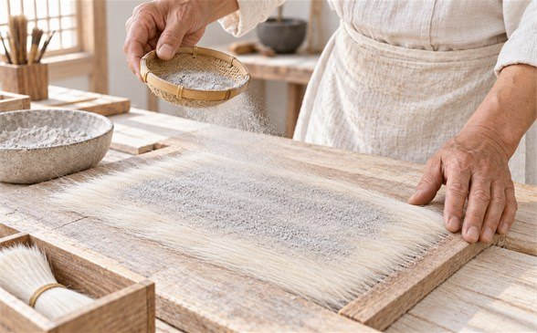
소형 다리미는 종이 너머로 낮은 열을 전달합니다. 털을 직접 태우지 않으면서 표면 기름만 고르게 줄이기 위한 도구입니다.
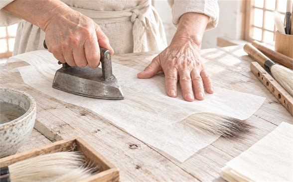
반달 모양 받침은 한 손으로 털을 돌려 가며 끝과 뿌리를 가지런히 모을 때 사용합니다.
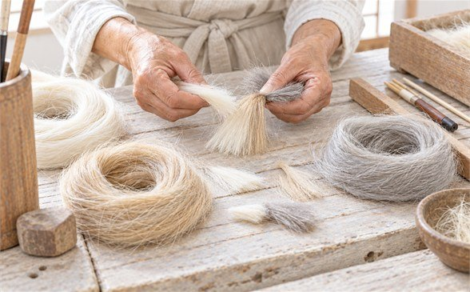
저울은 완성품의 굵기가 들쭉날쭉해지지 않도록 한 자루분의 털 무게를 맞추는 데 사용합니다.
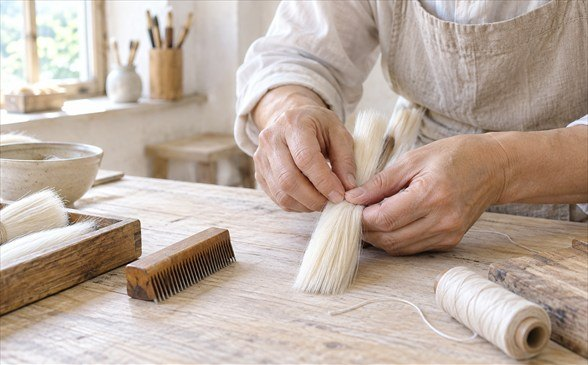
도모판은 펼친 털끝을 가볍게 마찰시켜 끊어진 털이 눈에 띄게 하는 작업판입니다.
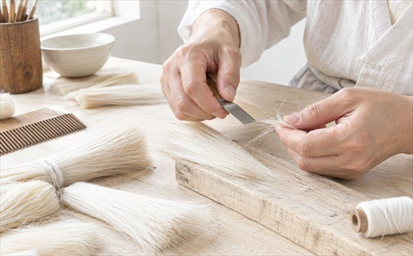
가위는 뿌리 쪽 길이를 규격에 맞춰 정리할 때 사용합니다. 끝의 호는 보존해야 하므로 자르는 방향을 구분합니다.
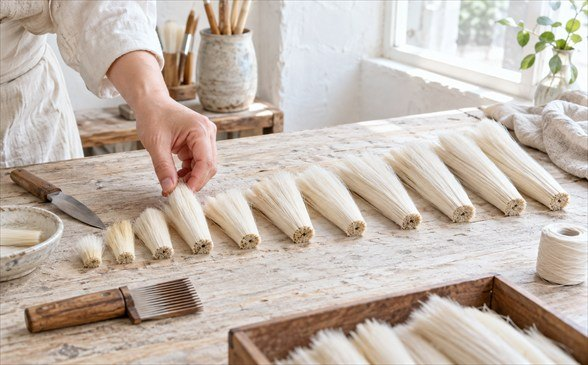
필관칼은 붓촉의 굵기에 맞춰 대나무 안쪽을 정확한 깊이로 파낼 때 씁니다.
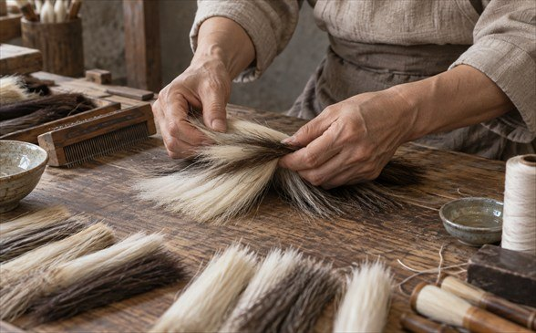
마지막에는 해초로 만든 묽은 풀을 붓촉에 먹여 끝을 한 점으로 모읍니다. 마르는 동안 형태가 잡히고, 포장하거나 옮길 때 연약한 털끝도 보호됩니다.